MindForger
Docs
MindForger
Docs
User documentation
This document briefly describes key MindForger features.
Basics
MindForger uses the following terminology:
In short:
- The MindForger workspace is analogous the desktop of an office desk.
For more details see Basics section in the Getting Started guide.
Knowledge manager
MindForger is knowledge management tool which means it is a software that helps you to organize, store, and access their knowledge effectively. With MindForger, you can create and maintain a workspace of your thoughts, ideas, notes, and any other kind of information they want to store.
MindForger provides a range of features to assist in knowledge management. Youa can create hierarchical outlines, mind maps, and tags to categorize and structure your knowledge. You can also create links between different pieces of information (notes), allowing for easy navigation and connections between related concepts.
In addition to organizing information, MindForger also includes powerful search functionality. This allows you to quickly locate specific pieces of information within your knowledge workspace. Whether you are searching for a keyword, a specific note, or a particular tag, MindForger helps you to find what you need efficiently.
Overall, MindForger assists you in organizing, accessing, and maximizing the value of your knowledge, ultimately promoting productivity and innovation.
Create Notebook
Create new notebook as follows:
- open menu
Notebook- 💡 if
Notebookmenu is disabled, then open list of notebooks (menuView/Notebooks) or notebooks tree (menuView/Notebook Shelves)
- 💡 if
- choose
Newmenu item New Notebookdialog is opened: - type in notebook name - feel free modify notebook creation options and tags- click OK to create the notebook
Create Note
Create new note as follows:
- open menu
Note- 💡 if
Notemenu might is disabled, then open the notebook in which you want to add the note
- 💡 if
- choose
Newmenu item New Notedialog is opened: - type in note name - feel free modify note creation options and tags- click OK to create the note
Edit Note
When you are viewing a note, you can edit it using one of the options below:
- Double click the mouse preview.
- Use Ctrl-e keyboard shortcut (Linux/Win).
- Use Alt-n e keyboard shortcut (Linux/Win).
Once you finish editing the note you can save it and preview using one of the options below:
- Use Alt-⬅ keyboard shortcut.
- Click Save & Leave button at the bottom of the editor.
Open Notebook
Open notebook as follows:
- open list of notebooks (menu
View/Notebooks) or notebooks tree (menuView/Notebook Shelves) - choose the notebook you want to open
- open the notebook using one of the following options:
- hit Enter key
- double-click the notebook row in the list/tree
Outliner

An outliner is a feature used in word processing, note-taking, and organizational software to help users outline and structure their ideas. Outlining actions in MindForger allow users to create hierarchies or levels of information by, making it easier to organize and navigate through a Notebook:
- open a notebook
- choose and view a note in the note tree
- open menu
Note - choose one of the outlining actions
Promote- to move note one level up in hierarchy (depth)
Demote- to move note one level down in hierarchy (depth)
Move to first- move note to the first from the top on its level (depth)
Move up- move note one position up on its level (depth)
Move down- move note one position down on its level (depth)
Move to last- move note to the last from the top on its level (depth)
Outlining is a powerful tool that allows you to organize your thoughts and make your remarks structured, comprehensible, and scalable.
Promote note
Promote note as follows:
- open a notebook
- choose and view a note in the note tree
- open menu
Note - choose one of the outlining actions
Promote- to move note one level up in hierarchy (depth)
Demote note
Promote note as follows:
- open a notebook
- choose and view a note in the note tree
- open menu
Note - choose one of the outlining actions
Demote- to move note one level down in hierarchy (depth)
Move to first
Promote note as follows:
- open a notebook
- choose and view a note in the note tree
- open menu
Note - choose one of the outlining actions
Move to first- move note to the first from the top on its level (depth)
Up
Promote note as follows:
- open a notebook
- choose and view a note in the note tree
- open menu
Note - choose one of the outlining actions
Move up- move note one position up on its level (depth)
Down
Promote note as follows:
- open a notebook
- choose and view a note in the note tree
- open menu
Note - choose one of the outlining actions
Move down- move note one position down on its level (depth)
Move to last
Promote note as follows:
- open a notebook
- choose and view a note in the note tree
- open menu
Note - choose one of the outlining actions
Move to last- move note to the last from the top on its level (depth)
Live Preview

Easily toggle live HTML preview of edited Markdown with shortcut or edit panel buttons.
View and Edit mode
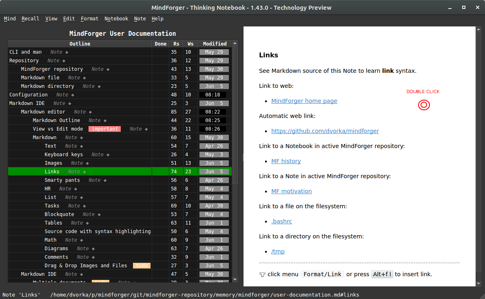
If you want to edit a section either double-click anywhere in the rendered preview on the right (MindForger window) or choose:
- menu
Notebook/Editfor title section - menu
Note/Editfor any sub-section
Wingman

Wingman is MindForger's private AI assistant. It brings the power of large language models (LLM) to your notes and it runs on your computer - open-weight models like gpt-oss, Llama, GLM or Qwen hosted by ollama never send a single word of your notes anywhere.
Why local AI:
- Privacy - your notes, ideas and plans stay on your machine.
- Offline - Wingman works without internet connection.
- Free - no account, API key, subscription or per-token bill.
- Your choice - pick the model which fits your hardware and your language.
Whether you need to write an in-depth analysis, draft a blog post, prepare a plan, or simply generate ideas, Wingman can also:
- summarize
- explain
- translate
- rewrite / reformulate
- fix grammar
- complete text
- find tasks in a Notebook or Note
- suggest synonyms and antonyms
... and much more - ask it anything using your own prompt.
Wingman in MindForger:
- menu
Knowledge/Wingman LLM(Ctrl-/ on Linux and Windows) opens the Wingman chat window where you run predefined or your own prompts, e.g. on the text selected in the Note editor - submenus
Wingman LLMof theNotebook,NoteandEditmenus run the most common prompts directly -Summarize,Explain,Find Tasks,Find Grammar Errors,Translate to English,Fix Grammar,Finish TextorRewrite Text- andMore prompts...offers the rest - Wingman also powers the semantic search of similar Notes (associations) using text embeddings
SOTA models: MindForger can talk to remote state-of-the-art (SOTA) large language
models of the LLM cloud providers as well. Such models are out of scope of this
documentation - your text is sent to a 3rd party when you use them. The Your data privacy
indicator in the Wingman preferences tells you whether the selected LLM keeps your data on your
machine or shares them. Local AI is the recommended way to use Wingman.
LLM provider configuration
Wingman uses a local LLM (for privacy) or remote LLM (for SOTA performance) provider. Local LLM provider as prerequisite:
- install ollama from https://ollama.com for macOS and Windows
- run
curl -fsSL https://ollama.com/install.sh | shon Linux
- run
- download a model e.g.
ollama pull llama3.2- browse the model library for more (gpt-oss, Qwen, GLM, ...). Bigger models give better answers, but need more memory (RAM/GPU) and are slower - start with a small one and upgrade if your hardware allows - check that ollama is running and the model is installed:
ollama list(ollama serves its API athttp://localhost:11434)
Local (or remote) LLM configuration:
- add LLM provider to MindForger:
- open menu
Knowledge - choose
Preferencesmenu item - select
Wingmantab in the configuration dialog - click Add LLM and choose
ollama - keep the default
ollama Server URL(http://localhost:11434) - change it only if ollama runs on another machine - choose the
LLM Modelfrom the list (Refresh loads the models installed in ollama) or type its name - click Probe to check the configuration and Add to save it
- open menu
- select the ollama model in the
Use LLMdrop down of theWingmantab and click Test Connection to make sure that MindForger can talk to it -Your data privacyof the selected LLM confirms that your data are not shared with any 3rd party - click OK to save the preferences
If something goes wrong:
Could not connect to the ollama server- check that ollama is running (ollama serve) and that the URL is correctNo models found on ollama server- install a model usingollama pull
Now open Wingman using Ctrl-/ and enjoy your private AI.
Fix grammar

Translate

Otto Wichterle byl světově proslulý český vědec a vynálezce, pracující zejména v oblasti makromolekulární organické chemie, mezi jejíž zakladatele patřil. Proslulý je především svými objevy a vynálezy, které vedly k zásadnímu zdokonalení a celosvětovému rozšíření měkkých kontaktních čoček. Tyto výsledky vycházely z jeho původní vědecké práce v oblasti hydrogelů. Wichterle se proslavil též objevem umělého polyamidového vlákna – silonu.
Rewrite
Complete text
ELI5: Explain like I'm 5

Markdown editor
MindForger can be used as a Markdown editor.
It allows you to easily write Markdown documents in a WYSIWYG text editor with Markdow syntax hints and an HTML rendered preview.
MindForger terminology:
- A Markdown file is a Notebook.
- A Markdown document section (line with leading
#) is a Note.
MindForger represents any Markdown as follows...
Open Markdown file
MindForger can be used to edit a single Markdown file:
$ mindforger analysis.md
If the given file exists, then it's opened for editing, otherwise a new Markdown file with this name is created and opened.
Markdown markup
Markdown is a lightweight markup language for creating formatted text using a plain-text editor. John Gruber and Aaron Swartz created Markdown in 2004 as a markup language that is appealing to human readers in its source code form.[9] Markdown is widely used in blogging, instant messaging, online forums, collaborative software, documentation pages, and readme files. -- Wikipedia
You can write your remarks as plain text without any formatting in MindForger.
However, you may use Markdown markup to emphasize important parts of the text, make links, create lists, etc. MindForger will also use Markdown to store your remarks which enables you to use any Markdown editor or tool.
You don't have to learn Markdown specification as MindForger editor and Format menu will help and guide you.
Markdown mapping
In order to enable quick navigation and refactoring of Markdown documents, MindForger shows Markdown documents (Notebooks) as an outline of Markdown sections (Notes) allowing you to efficiently choose/read/edit/refactor a particular section.
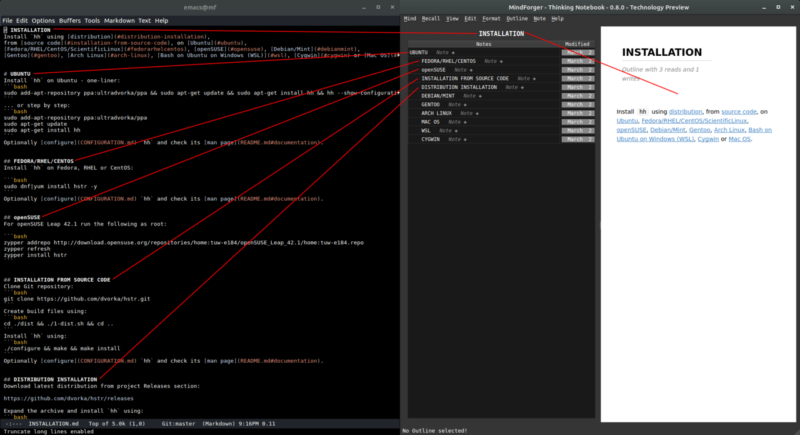
Check side-by-side Markdown document text view and MindForger view in the image above:
- The
INSTALLATIONMarkdown document is opened in a text editor (Emacs) on the left. - The same Markdown document is opened in MindForger on the right.
As you can see, MindForger represents the hierarchy of sections
(prefixed/underlined in Markdown syntax with/by #, - or =)
as a tree - called an outline:
- The tree of sections (in the left MindForger window) reflects
the depth/level of individual sections e.g. section
UBUNTUon the second level is prefixed with##and shown on the second level in the tree.
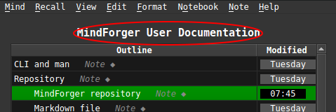
- You can open Markdown document title section (
INSTALLATION) by clicking its nameINSTALLATIONabove outline. - Any sub-section can be opened by clicking its name in the tree.
For switching between section (pre)view and edit mode refer to the next section.
Document ~ Notebook
Markdown document (file) is represented as notebook in MindForger.
Section ~ Note
Markdown document section is represented as note in MindForger.
Markdown format
Markdown is a plain text formatting syntax introduced by John Gruber. Markdown allows you to write using an easy-to-read, easy-to-write plain text format, easily rendered as HTML.
MindForger uses Markdown-based DSL. There are many flavors of Markdown - for Markdown syntax documentation please refer to:
- John Gruber Markdown syntax documentation
- GitHub Markdown documentation
- GitHub flavored Markdown specification
- Mermaid diagrams documentation
Sub-sections of this section provide Markdown syntax
overview and rendering demonstration. As you read
particular Markdown syntax features, be sure to
open each section for edit (to check syntax) and
experiment with menu Format/*.
Text
Monospace text, emph text, bold text,
italic text, bold text, ~~deleted~~ text.
💡 edit this Note to see the syntax
Keyboard keys
You can use Alt+f b to make marked text bold.
💡 edit this Note to see the syntax
Images
See Markdown source of this Note to learn image syntax.
Image from web:

Image from current MindForger repository:
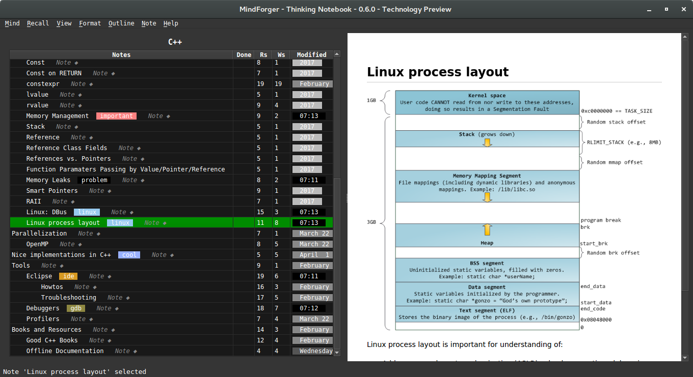
💡 edit this Note to see the syntax
💡 click menu Format/Image or press Alt+f g to insert image.
Links
See Markdown source of this Note to learn link syntax.
Link to web:
Automatic web link:
- https://github.com/dvorka/mindforger
Link to a Notebook in active MindForger repository:
Link to a Note in active MindForger repository:
Link to a file on the filesystem:
Link to a directory on the filesystem:
💡 edit this Note to see the syntax
💡 click menu Format/Link or press Alt+f l to insert link.
Smarty pants
Smarty pants like like:
- curly " and '
- ``backsticks''
- dashes a--ha and a---ha
- (tm) and (r) and (c)
- consecutive dots ...
- 1/4 1/2
- A^B and a^(b+2)
💡 edit this Note to see the syntax
HR
Horizontal...
... rulers ...
... split screen horizontally.
List
Bullet list:
- why
- ?
- how
- !
- what
- .
Numbered list:
- why
- ?
- how
- ?
- what
- ?
💡 edit this Note to see the syntax
Tasks
Task list:
- [x] skip-gram
- [ ] bag of words
- [X] GloWe vs. word2vec
- [ ] word embedding
- [x] stemmer
💡 edit this Note to see the syntax
Blockquote
Riddle:
frodo and glum,
riddles
in the dark
💡 edit this Note to see the syntax
Tables
Pets:
| Snake | Turtle |
|---|---|
| Karkulka | Ema |
| Frontend | Backend |
|---|---|
| Qt | C++ |
Columns can be aligned to left/right or centered:
| Left | Center | Right |
|---|---|---|
| This is frontend | This is middle-ware | This is backend |
| Js | ESB | C++ |
💡 edit this Note to see the syntax
Source code with syntax highlighting
There are multiple options how a block of source code can be written in Markdown.
IMPORTANT: note leading empty lines before code blocks.
1) Tab indentation w/o language spec and w/o syntax highlighting:
public static void main(string[] args) {
return 0;
}
2) Code block w/ language spec:
```java
```
public static void main(string[] args) {
return 0;
}
or w/o language spec:
public static void main(string[] args) {
return 0;
}
3) Fenced block w/ language spec:
public static void main(string[] args) {
return 0;
}
or w/o language spec:
public static void main(string[] args) {
return 0;
}
💡 edit this Note to see the syntax
Math
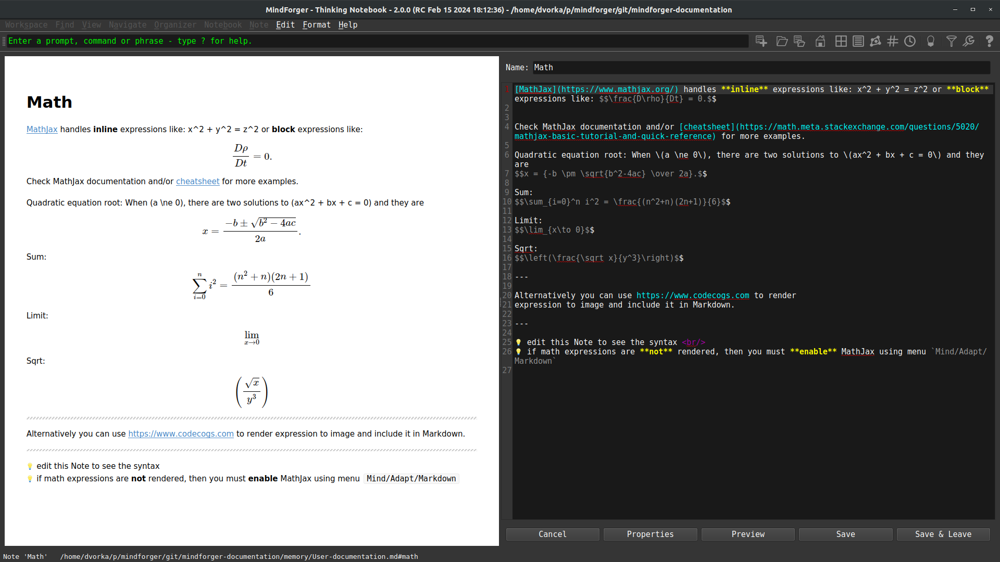
MathJax handles inline expressions like: x^2 + y^2 = z^2 or block expressions like: $$\frac{D\rho}{Dt} = 0.$$
Check MathJax documentation and/or cheatsheet for more examples.
Quadratic equation root: When (a \ne 0), there are two solutions to (ax^2 + bx + c = 0) and they are $$x = {-b \pm \sqrt{b^2-4ac} \over 2a}.$$
Sum: $$\sum_{i=0}^n i^2 = \frac{(n^2+n)(2n+1)}{6}$$
Limit: $$\lim_{x\to 0}$$
Sqrt: $$\left(\frac{\sqrt x}{y^3}\right)$$
Alternatively you can use https://www.codecogs.com to render expression to image and include it in Markdown.
💡 edit this Note to see the syntax
💡 if math expressions are not rendered, then you must enable MathJax using menu menu Knowledge/Preferences/Viewer/Math support
MathJax
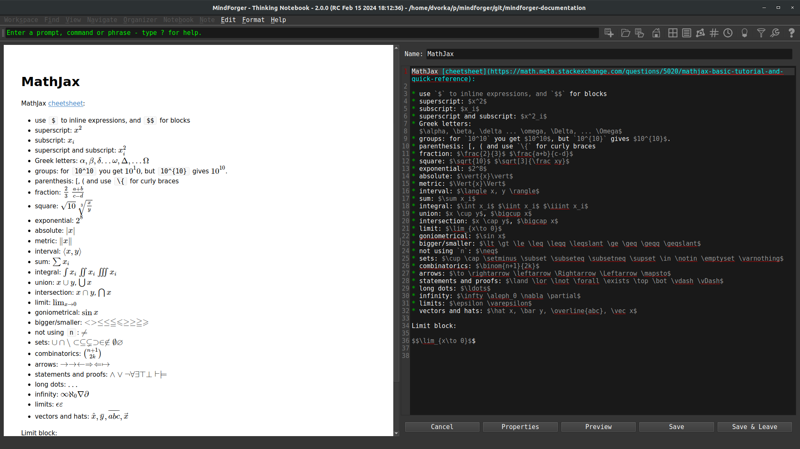
MathJax cheetsheet:
- use
$to inline expressions, and$$for blocks - superscript: $x^2$
- subscript: $x_i$
- superscript and subscript: $x^2_i$
- Greek letters: $\alpha, \beta, \delta ... \omega, \Delta, ... \Omega$
- groups: for
10^10you get $10^10$, but10^{10}gives $10^{10}$. - parenthesis: [, ( and use
\{for curly braces - fraction: $\frac{2}{3}$ $\frac{a+b}{c-d}$
- square: $\sqrt{10}$ $\sqrt[3]{\frac xy}$
- exponential: $2^8$
- absolute: $\vert{x}\vert$
- metric: $\Vert{x}\Vert$
- interval: $\langle x, y \rangle$
- sum: $\sum x_i$
- integral: $\int x_i$ $\iint x_i$ $\iiint x_i$
- union: $x \cup y$, $\bigcup x$
- intersection: $x \cap y$, $\bigcap x$
- limit: $\lim_{x\to 0}$
- goniometrical: $\sin x$
- bigger/smaller: $\lt \gt \le \leq \leqq \leqslant \ge \geq \geqq \geqslant$
- not using
n: $\neq$ - sets: $\cup \cap \setminus \subset \subseteq \subsetneq \supset \in \notin \emptyset \varnothing$
- combinatorics: $\binom{n+1}{2k}$
- arrows: $\to \rightarrow \leftarrow \Rightarrow \Leftarrow \mapsto$
- statements and proofs: $\land \lor \lnot \forall \exists \top \bot \vdash \vDash$
- long dots: $\ldots$
- infinity: $\infty \aleph_0 \nabla \partial$
- limits: $\epsilon \varepsilon$
- vectors and hats: $\hat x, \bar y, \overline{abc}, \vec x$
Limit block:
$$\lim_{x\to 0}$$
Diagrams
MindForger supports Mermaid (cheatsheet) to render diagrams.
Flowchart diagram:
graph TD;
A-->B;
A-->C;
B-->D;
C-->D;
Sequence diagram - note different Mermaid diagram markup encapsulation element which has different background rendering that code block:
prevail! John-->>Alice: Great! John->>Bob: How about you? Bob-->>John: Jolly good!
GANTT diagram:
gantt
dateFormat YYYY-MM-DD
title GANTT diagrams in MindForger
section A section
Completed task :done, des1, 2014-01-06,2014-01-08
Active task :active, des2, 2014-01-09, 3d
Future task : des3, after des2, 5d
Future task2 : des4, after des3, 5d
section Critical tasks
Completed task in the critical line :crit, done, 2014-01-06,24h
Implement parser and jison :crit, done, after des1, 2d
Create tests for parser :crit, active, 3d
Future task in critical line :crit, 5d
Create tests for renderer :2d
Add to mermaid :1d
💡 edit this Note to see the syntax
💡 if diagram expressions are not rendered, then you must enable them using menu Knowledge/Preferences/Viewer/Diagram support.
Comments
If you want line or multi-line comment that is strictly for yourself (readers of the converted document should not be able to see it, even with "view source") you could (ab)use the link labels (for use with reference style links) that are available in the core Markdown specification.
Single line comment:
Multi-line comment:
Note that two conditions are important:
- Using
#(and not other delimiter allowed by Markdown specification) - An empty line before the comment. Empty line after the comment has no impact on the result.
If you need inline comment, then use HTML comments:
- There is you cannot see.
💡 edit this Note to see the syntax
Drag & Drop Images and Files
Drag:
- file
- ... for example
.pdf, presentation or.ziparchive
- ... for example
- image
- ...
.png,.gif, ... or any other image
- ...
- image data
- ... screenshot or image selection from Gimp, Krita or any other graphics editor
... and drop to Note/Notebook editor.
DnD allows easy import of attachments/images to MindForger
repository - either by value (choose Copy in attachment/image
dialog) or by reference (path to the file on local file system
is used).
Table of contents generator

Link completion

While editing a Note or Notebook write prefix of a Notebook/Note name and use Ctrl-/ to get link completion. When you choose a link from completer, Markdown link to target Notebook/Note is automatically created.
Markdown IDE
MindForger is more than just Markdown editor - it is integrated development environment (IDE) for the development of Markdown document collections (repositories, documentation, books, etc.):
- multiple Markdown documents can be opened in order to perform search, refactoring and analytics
- user defined stencils can be used to quickly create new notebooks and notes
- notebook structure can be easily refactored with outliner-style operations defined on notes
- both notebooks and notes can be refactored withing or across different notebooks and notes
Open Markdown directory
You can open any directory and MindForger will find all Markdown files within the directory and its sub-directories and open them for search, navigation and editing:
$ mindforger a-git-repository-with-interesting-content
For example, you can find an interesting Git repository on GitHub or BitBucket, clone it to your machine and open it with MindForger to easily navigate it.
Multiple documents
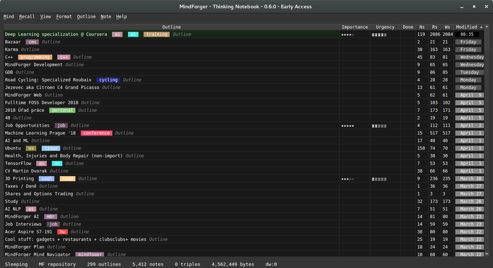
You can open any directory and MindForger will find all Markdown files within that directory and all its sub-directories and make them available for search, navigation and editation:
$ mindforger a-github-repository-with-interesting-content
Where a-github-repository-with-interesting-content is a directory
containing Markdown documents.
💡 if you openeded more than one MindForger document, you can see all documents indexed by MindForger by clicking menu View/Notebooks
Stencils
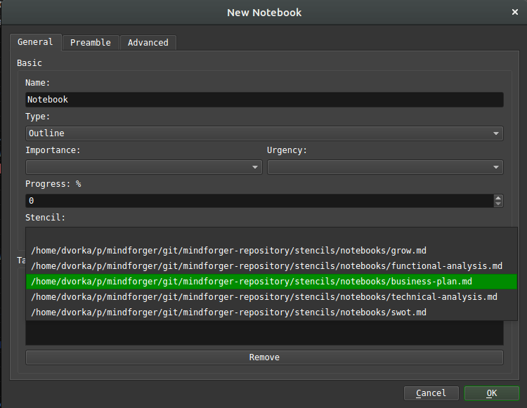
Stencil represents a common pattern that can be used in various situations e.g. to solve a task. It might be a how to (like how to change a car wheel) that once created, you may want to use repeatedly w/ possibility of customization.
Notebook stencil corresponds to application of a problem/semantic domain to another problem. Once you have a modus operandi or you know how to do that, than this is the case.
You can use a stencil when creating a new notebook
or note - check Stencils drop-down in the dialog
opened using menu Notebook/New or Note/New.
MindForger repositories (including the default one) contain stencils for both notebooks and notes:
<mindforger repository>/
├── ...
└── stencils
├── notebooks
└── notes
MindForger is shipped with an initial set of stencils for meeting notes, software analysis/design, GROW model etc.
You can easily extend outlines just by copying Markdown file
to stencils/notes or stencils/notebooks directory.
Refactoring
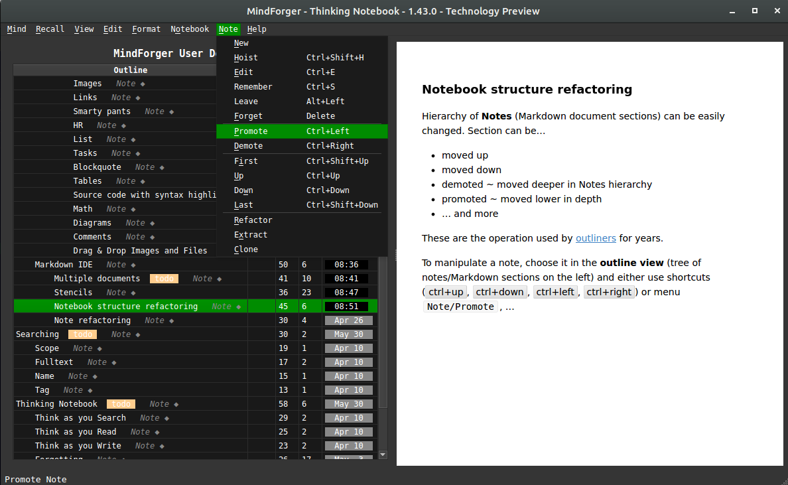
Hierarchy of Notes (Markdown document sections) can be easily changed using operations introduced by outliners. Note can be...
- moved up
- moved down
- demoted ~ moved deeper in Notes hierarchy
- promoted ~ moved lower in depth
- ... and more
To manipulate a note, choose it in the outline view (tree of notes/Markdown sections
on the left) and either use shortcuts (ctrl+up, ctrl+down,
ctrl+left, ctrl+right) or menu Note/Promote, ...
Note refactoring
Note (Markdown section) can be refactoring (along with its child notes) between different Notebooks (Markdown documents):
- choose source note to be refactored in the outliner tree of notes
- use menu
Note/Move to Notebookto specify target notebook
Note and its child notes will be moved to the target notebook.
Home notebook
You can mark any notebook as home and it will be opened:
- on MindForger start
- using CtrlShifth keyboard shortcut
Home notebook can be set/unset using menu Notebook/Make Home.
Search
Ability to find a specific Notebook or Note is one of the most important MindForger features. Notebooks and Notes can be found by:
- full-text search (content)
- name
- tag(s)
💡 see menu Find for search options
Fulltext
Use menu Find/Full-text Search to search for notes
using full-text search. Result shows notes Markdown source
with highlighted matches.
Search scope:
- If you run full-text search from notebooks
view (menu
View/Notebooks), then all notebooks and their notes are searched. - If you run full-text search when a notebook is opened (notes outline on the left, note view/editor on the right), then only notes of that particular notebook are searched.
Name
Use menu Find/Find Notebook by Name / Find/Find Note by Name
to search for notebooks / notes by name. Result shows as you
write the name in the dialog.
Search scope:
- If you run note search by name from notebooks
view (menu
View/Notebooks), then all notebooks notes are searched. - If you run note search by name when a notebook is opened (notes outline on the left, note view/editor on the right), then only notes of that particular notebook are searched.
Tag
Use menu Find/Find Notebook by Tags / Find/Find Note by Tags
to search for notebooks / notes by tag(s). Result shows as you
add/remove tags in the dialog.
Search scope:
- If you run note search by tag from notebooks
view (menu
View/Notebooks), then all notebooks notes are searched. - If you run note search by tag when a notebook is opened (notes outline on the left, note view/editor on the right), then only notes of that particular notebook are searched.
Thinking Notebook
MindForger aims to mimic human mind - learning, recalling, recognition, associations, forgetting - in order to achieve synergy with your mind to make your searching, reading and writing more productive:
- learning: MindForger loads Markdown document(s), parses them and construct knowledge graph
- recalling: you can recall notebooks/notes by content, name, tags, semantic domain, ...
- recognition: MindForger is able to recognize people, organization, places, ... in your remarks
- associations: MindForger suggests relevant notes as you browse, read and edit notebooks and notes
- forgetting: MindForger handles the process of scoping and forgetting analogous to human mind
Learning
...learning data, relationships, similarity (granularity N and O), relevancy in time (timestamps and R/W count), ...
MindForger can be used to learn:
- manage knowledge in a MindForger repository
- edit single Markdown file
- edit multiple Markdown files in given (sub)directories
MindForger repository
MindForger repository is a directory with specific structure where MindForger stores your knowledge. It contains Markdown files (Markdown hosted DSL) allowing you to get most of MindForger capabilities.
If you run MindForger without parameters, then it opens the default MindForger repository:
$ mindforger
If MindForger default repository doesn't exist, then it is created on MindForger first start in:
~/mindforger-repository
Repository structure looks like this:
$ tree mindforger-repository/
mindforger-repository/
├── limbo
├── memory
├── mind
└── stencils
├── notebooks
└── notes
Metadata
Tags
Read/write statistics
Progress
Deadlines
Things and types
Relationships
Auto-linking
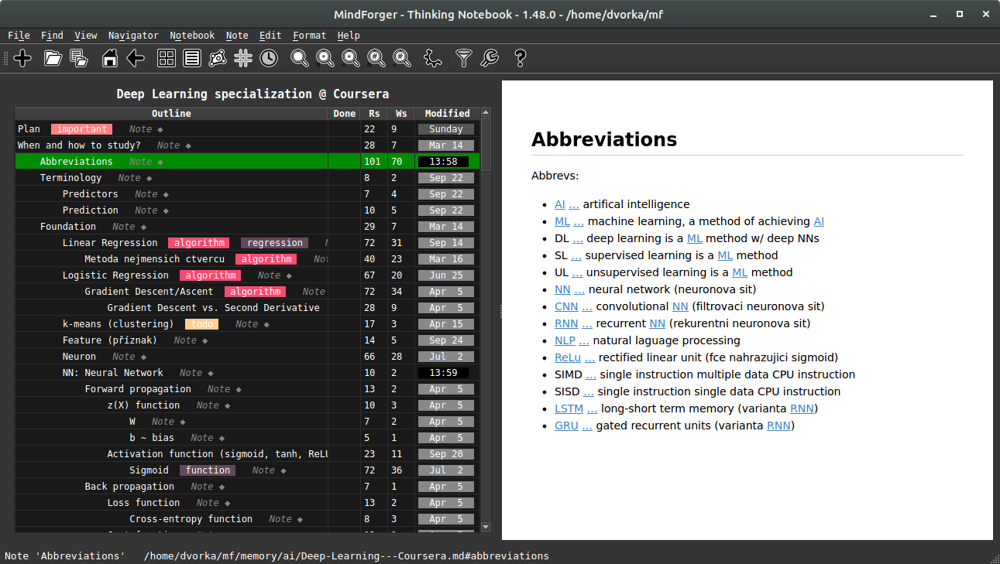
Autolinking discovers relevant notes in your MindForger repository and/or Markdown document and automatically injects links to the text. In the screenshot above all links were injected i.e. source text (Markdown) is just plain text without links.
Autolinking helps in immediately finding remarks related to the notebooks and notes you are browsing.
Autolinking also saves the time - you don't have to create/change/maintain links in your remarks.
Tips and tricks:
- If note name contains
:, then only text preceding:is used for matching.- Example: if "GPS: General positioning system" is note name, then text is searched for "GPS" only as it brings more matcheds.
- Autolinking can be configured so that it performs case insensitive search for the first letters
in note names.
- Example: if "Stencils" is note name, then text is searched also for "stencils" as it brings more matcheds.
- Autolinking can be quickly toggled using menu
Knowledge/Autolink.
TaYR: Think as you Read
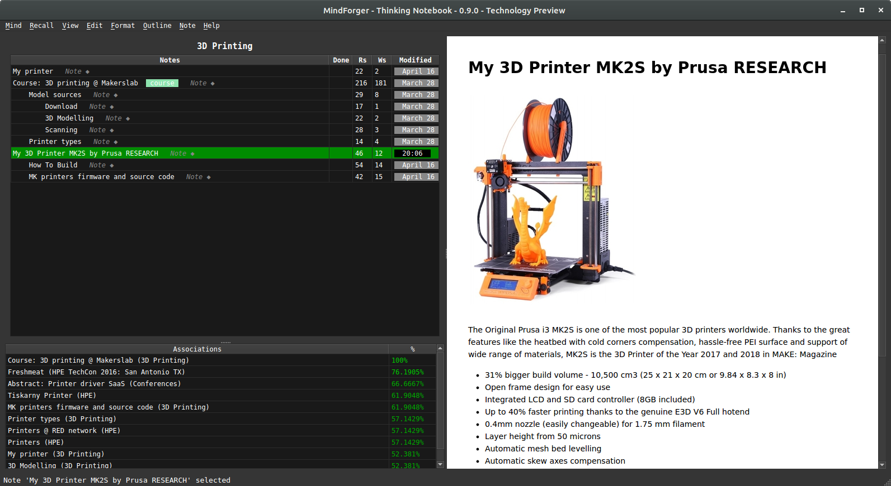
MindForger is able to suggest relevant notes as you browse and read:
- relevant notes are computed for the note being currently selected
- relevant notes are shown in the lower left corner by
Associationstable - similarity score in the
Associationstable indicates relative relevancy in %
In the screenshot above you can see relevant notes (lower left corner) for the selected
note My 3D Printer MK2S by Prusa RESEARCH.
See also: think vs. sleep mode
TaYW: Think as you Write
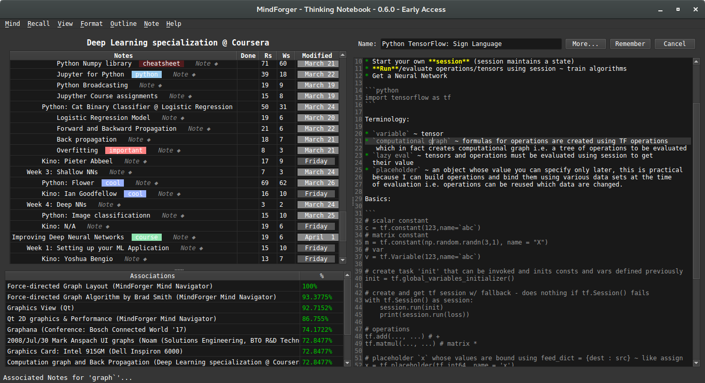
MindForger is able to suggest relevant notes as you write note content in the editor:
- relevant notes are computed for the word under the cursor
- relevant notes are shown in the lower left corner by
Associationstable - similarity score in the
Associationstable indicates relative relevancy in %
In the screenshot above you can see relevant notes (lower left corner) for the selected
word graph (notice cursor between letter g and r on the current line with light-gray background).
TaYB: Think as you Browse
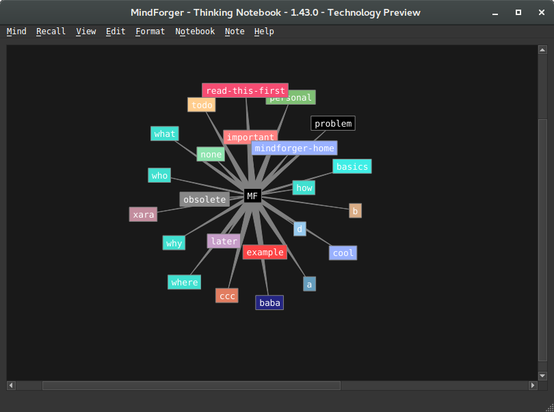
Knowledge graph navigator allows you to browse notebooks, notes, tags and other resources in visually.
Navigator can be either activated using toolbar or using CtrlShiftk keyboard shortcut. It is scope sensitive e.g. if you activate navigator while viewing note, then this note becomes central node of the visualization.
Knowledge graph can be zoomed, shuffled and its edgest can be (globally) stretched/shrinked.
... how exactly it thinks and why it's useful
TaYS: Think as you Search
...[semantic search - this feature is being implemented - RAG]...
Knowledge graph navigator
"I hear, and I forget; I see, and I remember." -- Chinese proverb
Scopes
MindForger works with two types of scopes:
Time Scope
Use menu Knowledge/Scope or Alt+k c to configure time scope.
Consider the following situations:
-
Over the years your employer company internal systems change and/or you work for a number of different employers. Each time there is a different/better/stronger Wifi authentication configuration (video conference setup, payslips system, etc.). Therefore in you memory (or in MindForger remarks) there are multiple how-tos, but you want to use only the recent want. At the same time you do not want to (explicitly) remove/purge the previous how-tos as they can be useful in different situations.
-
You learn how to manually divide two long numbers as a child. Then you do not need this skill for years as you use calculator/computer. When you want to learn your child how to manually divide numbers, you have to find it (deep) in your memory.
This is where MindForger time scope functionality comes in - you can restrict the scope (notes working set) by time. For example:
- you work on a project and want to see only notes you modified today
- whenever you use MindForger you want to work with notes not older than 18 months
- when reading/working with your employer internal systems how-to notebook you want to see only notes younger than 1 year
In particular you can set global time scope:
- Notebooks listing:
- Only noteboks within given time scope (younger) will be shown.
- Add/forget notebook:
- Notebooks can be added/forgotten.
- Notebook's note tree view:
- Only notes within given time scope will be shown. If note is within timescope and note's parent notes are not, then note is shown along with its parents (parents would be normally hidden). In other words, fresh note ensures its parents are shown.
- Add/remove note:
- Notes can be added/forgotten.
- IMPORTANT: remember that note can be forgotten along with its child notes that can be hidden (if they didn't match time scope) i.e. you may delete notes you don't see.
- Promote/demote/up/down note:
- Notes can be added/forgotten.
- IMPORTANT: remember that these operations work on the *non-filtered model i.e. you perform operation (e.g. up), nothing seems to happen, but the note was just moved above a hiddin note that is not in scope i.e. you refactor notes you don't see.
- Note refactoring:
- Notes can be refactoring (to other notebook) and extracted.
- IMPORTANT: remember that note can be refactored along with its child notes that can be hidden (if they didn't match time scope) i.e. you may move notes you don't see.
In particular you can set note specific time scope that overrides global time scope:
- ... behaviour is the same as above except that this setting has no effect on notebooks listing ...
Tag Scope
Use menu Knowledge/Scope or Alt+k c to configure tag(s) scope.
Scoping using tag(s) allows you to limit notebook working set only to notebooks having specified set of tags. It's useful when you work with bigger MindForger repositoriers and you don't want to be distracted by unrelated notebooks.
Scoping using tags can be combined (AND) with scoping using time.
Recognize what matters
Named-entity recognition
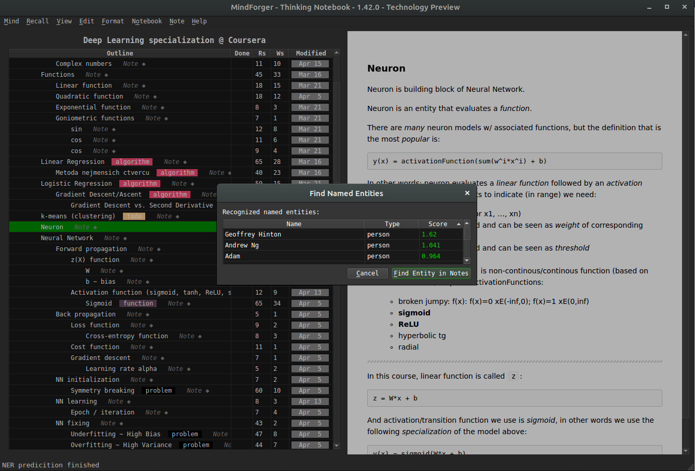
This feature is being implemented.
Semantic search and domains
...[semantic search - this feature is being implemented - RAG]...
Word embeddings based search, associations and navigation.
Forgetting
Motto: "Computers need to forget". -- Viktor Mayer-Schönberger
Before I deep dive to MindForger features let me formulate a few questions to explain the motivation behind forgetting/scoping related functionality:
- Do we forget or we simply don’t remember?
- When we forget?
- How and where exactly forgetting in our minds happens?
- If we remember something, can it be forgotten?
- Do we need to forget and why?
I believe that if a concept makes it to long term memory (LTM), then it can be never forgotten. It’s in LTM and it always be there. The only question is how many association/links it has. In the worst case it may happen that there is no association path it it - it ends as an island or orphan better said. If it’s not reminded or not used for long time, association can get weaker and weaker and such concepts is diving deeper and deeper to LTM. However, it is always there. Thus it’s just about the lookup. According to my experience a strong emotional experience or return to the deeper paths of LTM (talking about your friends or family about your early childhood) helps to remind such concepts and in the latter case even strongly bind them to upper level LTM (move them up in the memory) and refresh such memories so that you can remind them later much more easier.
If there would be no possibility of the selection of sensed informations and all the sensing will be fixed in our memory, its capacity would be fully used very soon.
MindForger, as computer program, needs to forget. But forgetting does NOT mean deleting of information.
MindForger maintains all the remarks you ever written (see limbo), but works with/shows only with a scope configurable by you.
Limbo

MindForger does not delete notebooks - it moves them to a location called Limbo that
can be found in ${ACTIVE_MF_REPOSITORY}/limbo. This is where you can delete Markdown
documents permanently.
MindForger, in its current implementation, does delete notes. They are not moved to a note Limbo.
If you use menu Note/Delete, then the note is deleted.
Side note: I personally use CMS (Git) - I have full history of notebooks and notes. Tracking of all notes would be useful, however HW resource consumption intensive. This is also why I don't want to duplicate this (already sophisticated) functionality within MindForger.
Productivity
MindForger aims to help you when you study, write a document/paper/article/book or want to achieve a goal.
Therefore it enables you to...
- prioritize work on notebooks using urgency and importance
- helps you to decide what you do first and next using Eisenhower matrix
- track progress in %
- specify deadlines (for notes)
Urgency and Importance
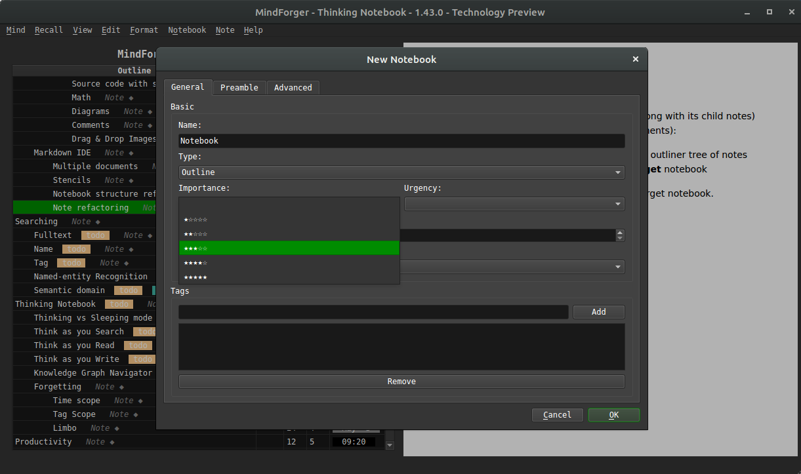
When creating (menu Notebook/New) or editing notebook (edit mode More... button) you
can specify:
- importance property ~ how important is the notebook
- urgency property ~ how important is (study/challenge/...) task related to notebook (or notebook content itself)
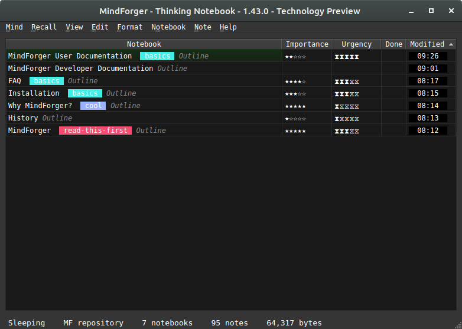
These properties are in turn shown in notebooks view (menu View/Notebooks) and Eisenhower matrix.
Eisenhower matrix
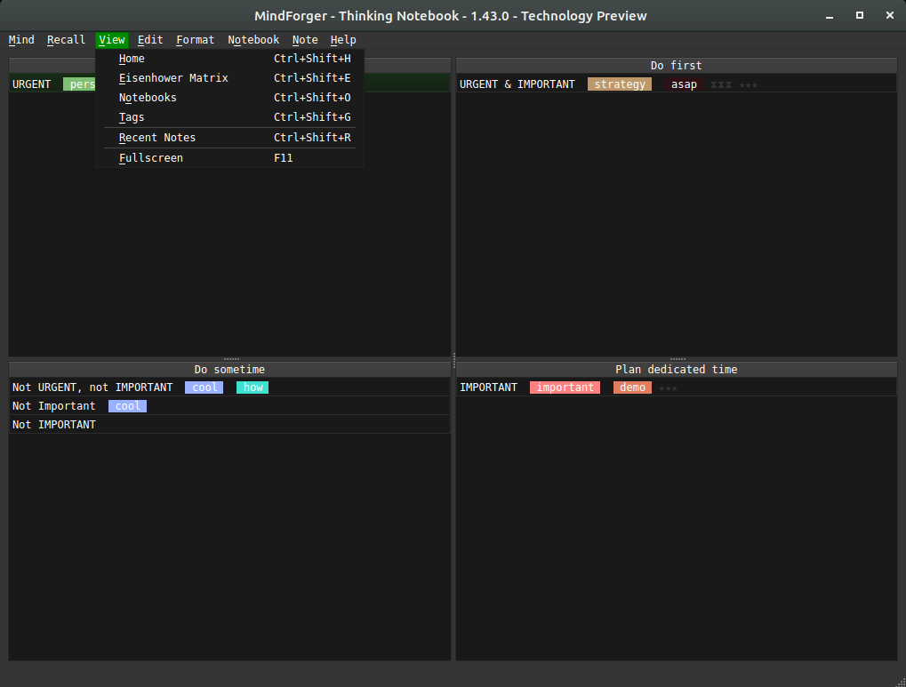
Wikipedia: Eisenhower matrix stems from a quote attributed to Dwight D. Eisenhower: "I have two kinds of problems, the urgent and the important. The urgent are not important, and the important are never urgent."
Using the Eisenhower Decision Principle, tasks are evaluated using the criteria important/unimportant and urgent/not urgent, and then placed in according quadrants in an Eisenhower Matrix (also known as an "Eisenhower Box" or "Eisenhower Decision Matrix"). Tasks are then handled as follows:
Tasks in
- Important/Urgent quadrant are done immediately and personally e.g. crises, deadlines, problems.
- Important/Not Urgent quadrant get an end date and are done personally e.g. relationships, planning, recreation.
- Unimportant/Urgent quadrant are delegated e.g. interruptions, meetings, activities.
- Unimportant/Not Urgent quadrant are dropped e.g. time wasters, pleasant activities, trivia.
This method is said to have been used by U.S. President Dwight D. Eisenhower.
Organizers: tag-based aspects

Eisenhower matrix on tags
The Eisenhower Matrix, also known as the Eisenhower Decision Matrix or simply the Eisenhower Box, is a time management tool that helps prioritize tasks based on their urgency and importance. It is named after Dwight D. Eisenhower, the 34th President of the United States, who was known for his effective time management skills.
The matrix categorizes tasks into four quadrants:
-
Urgent and Important (Do First): These are the tasks that require immediate attention and have high priority. They should be done as soon as possible to avoid negative consequences or missed opportunities.
-
Important, but Not Urgent (Schedule): These tasks are important for long-term goals but do not require immediate action. They should be scheduled and given appropriate time and attention.
-
Urgent, but Not Important (Delegate): These tasks are time-sensitive but do not contribute significantly to your goals. They should be delegated to others if possible, to free up your time for more important tasks.
-
Not Urgent and Not Important (Eliminate): These tasks are low priority and do not contribute to your goals. They should be eliminated or minimized to make room for more important activities.
Using the Eisenhower Matrix helps in prioritizing tasks effectively, reducing procrastination, and ensuring that important goals are not overlooked. It encourages a focus on important tasks, enables better time allocation, and maximizes productivity.
Kanban on Tags
Kanban is a project management methodology that originated from the Toyota Production System in the late 1940s. It is a visual system that helps teams track and manage their work. The word "Kanban" translates to "visual signal" or "card" in Japanese.
In Kanban, the work is represented as cards or sticky notes, which are placed on a board with different columns that represent the various stages of the workflow, such as "To Do", "In Progress", and "Done". This provides a clear visual representation of the work in progress and allows team members to see what tasks are in each stage of development.
The key principles of Kanban include visualizing workflow, limiting work in progress, and focusing on continuous improvement. By visualizing the work, you can identify bottlenecks and areas for improvement.
MindForger allows you to create Kanban boards and organize notes to columns using tags.
Machine learning: NLP
"Artificial intelligence will overcome natural intelligence soon. However, natural stupidity can never be replaced by the artificial one." -- Jára da Cimrman
CSV export
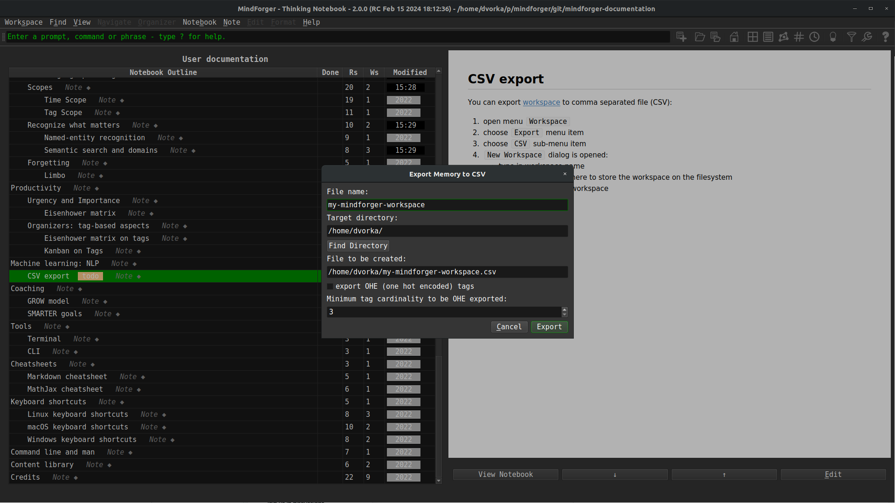
You can export workspace to comma separated file (CSV):
- open menu
Knowledge - choose
Exportmenu item - choose
CSVsub-menu item Export Workspace to CSVdialog is opened: - type in file name - choose whether you want to encode notebook tags using one hot encoding (OHE)- click Export to export the workspace
Coaching
(Auto) coaching is a self-improvement process where individuals provide themselves with guidance, support, and feedback to achieve personal or professional goals. It involves self-reflection, setting goals, creating action plans, and monitoring progress.
Auto coaching usually incorporates various techniques like journaling, visualization, affirmations, and self-assessment tools to foster self-awareness, self-motivation, and personal growth. It is a proactive approach to personal development and can be done through books, online resources, or through the use of specific self-coaching methodologies.
MindForger can be used as an auto coaching tool.
GROW model

The GROW model is a popular (auto) coaching framework that is used to structure a conversation or coaching session. GROW stands for Goal, Reality, Options, and Way Forward. The model helps individuals or teams set clear goals, explore the current reality, generate options for actions, and establish a plan to move forward. It is widely used in areas such as personal development, career coaching, and leadership coaching.
Use MindForger GROW model stencil to create G.R.O.W. notebook with questions allowing you to efficiently use the G.R.O.W method.
SMARTER goals
SMARTER goals is a framework used to set effective and measurable goals. It stands for:
-
Specific: Goals should be clear and well-defined. Avoid vague or general statements. Specify what exactly you want to achieve.
-
Measurable: Goals should be quantifiable so that progress can be easily tracked. Include specific criteria or indicators to measure success.
-
Attainable: Goals should be realistic and within reach. Consider the resources, skills, and time available to achieve the goal.
-
Relevant: Goals should be aligned with your overall objectives and have significance to your life or work. Ensure they are worthwhile and meaningful.
-
Time-bound: Goals should have a clear deadline or timeline. Set specific dates to create a sense of urgency and to keep yourself accountable.
-
Evaluate: Continuously monitor and evaluate progress towards your goals. Assess whether adjustments or improvements are needed.
-
Readjust: Adapt or readjust your goals as necessary, based on new information or changing circumstances. Remain flexible and open to revisions.
Tools
MindForger tools:
CLI
In certain situations, it is faster to use commands to navigate around the MindForger UI instead of using a mouse. In these cases, you can use the command line interface (CLI):
Cheatsheets
See MindForger cheetsheet(s):
Markdown cheatsheet
See Markdown cheat sheet.
MathJax cheatsheet
See MathJax cheat sheet.
Keyboard shortcuts
Prefer menu based keyboard shortcuts which are self-documented e.g.
- Alt+b n
- create new notebook
- Alt+b e
- edit currently viewed notebook
- Alt+n n
- create new note
- Alt+n e
- edit currently viewed note
- ... and many others...
Editor:
- Alt+Left
- ... save Note, leave editor and show rendered HTML.
- Ctrl+g
- ... cancel editation and leave editor without saving
Views:
- Ctrl+Shift+b
- ... find notebook by name.
- Ctrl+Shift+n
- ... find note by name.
- Ctrl+Shift+o
- ... show list of notebooks.
Linux keyboard shortcuts
...
macOS keyboard shortcuts
...
Windows keyboard shortcuts
...
Command line and man
For information on MindForger command line options read the manual page:
man mindforger
For command options see the help file:
$ mindforger --help
Usage: mindforger [options] [<directory>|<file>]
Thinking notebook.
Options:
-t, --theme <theme> Use 'dark', 'light' or other GUI <theme>.
-c, --config-file-path <file> Load configuration from given <file>.
-v, --version Displays version information.
-h, --help Displays this help.
Arguments:
[<directory>|<file>] MindForger repository or directory/file with
Markdown file(s) to open
Library
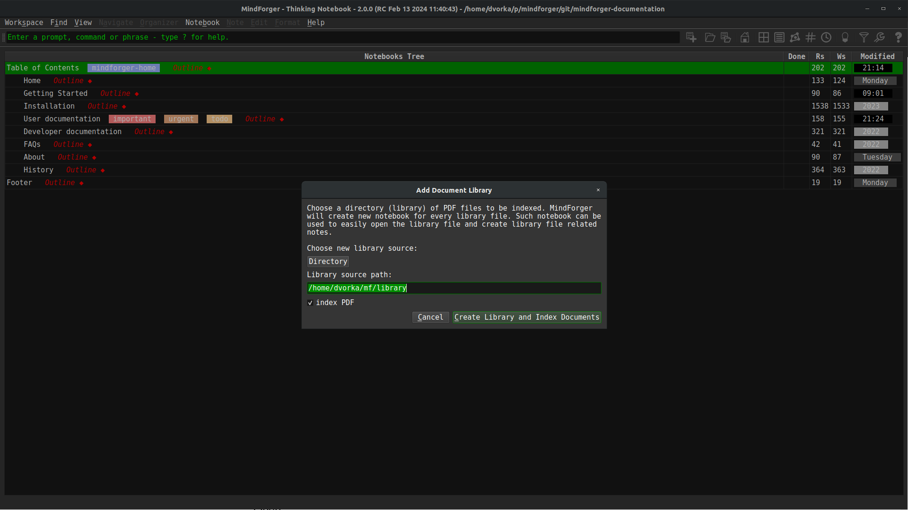
Library bring ability to index external PDF files and generate Notebooks which represent them in MindForger. Synchronization and removal of the library (directory with files) is supported as well.